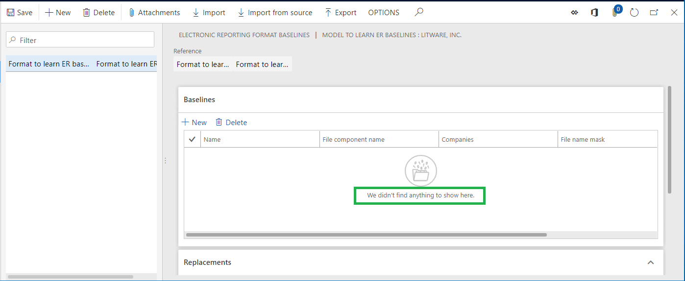
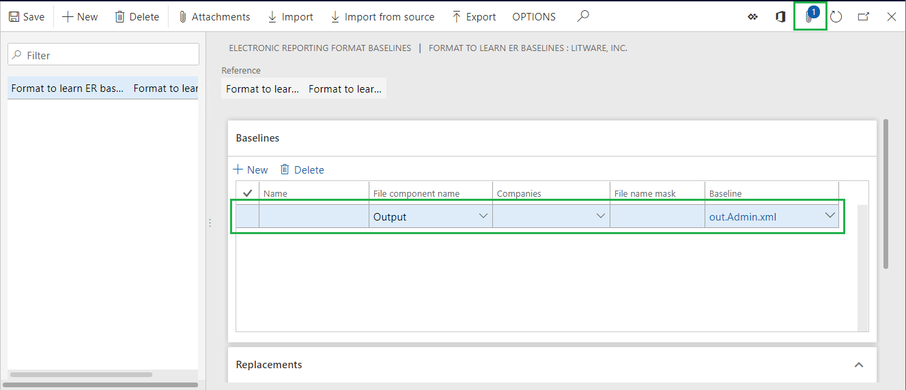
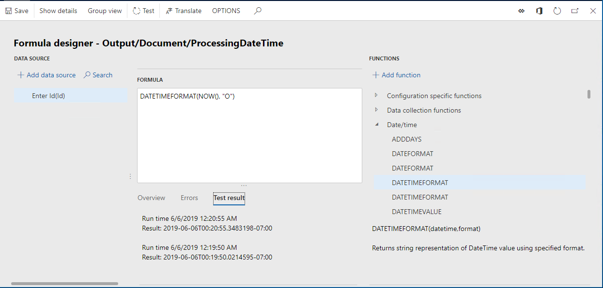
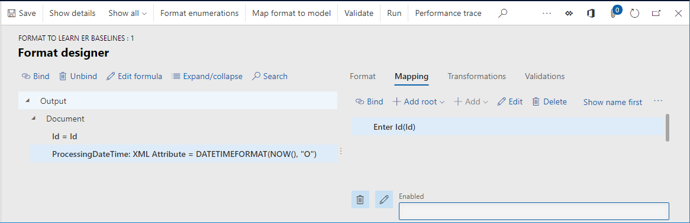
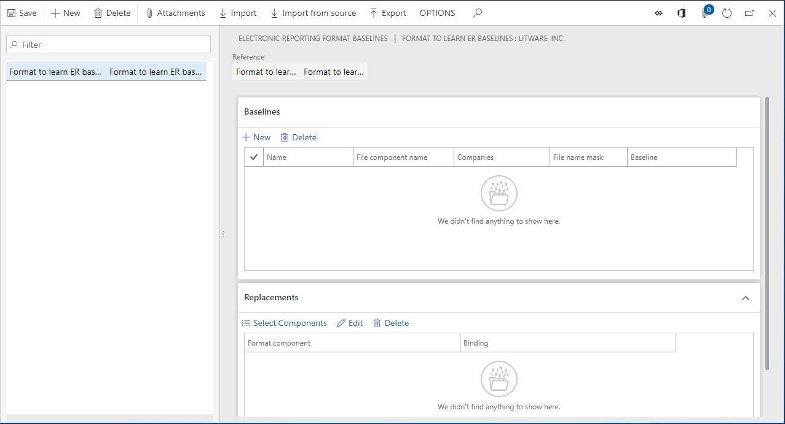
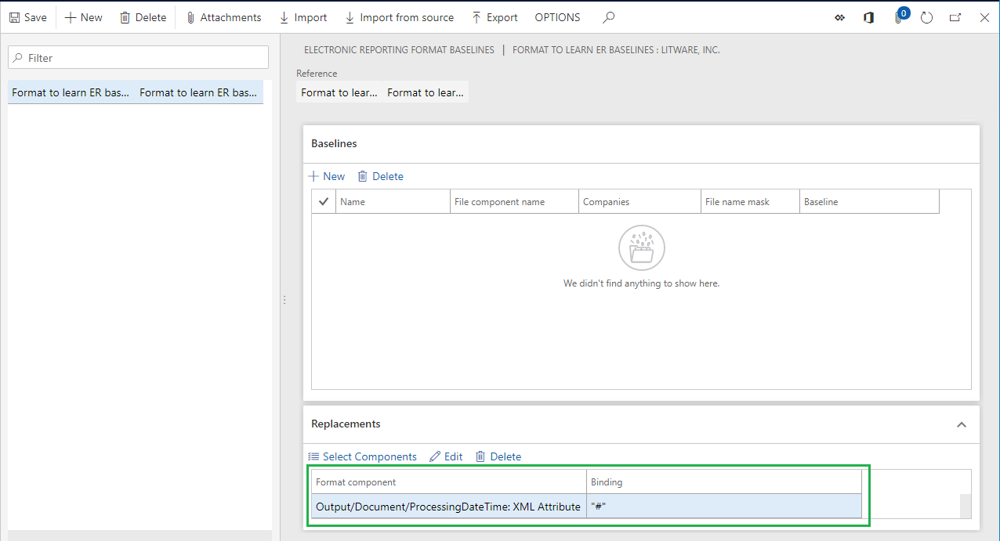
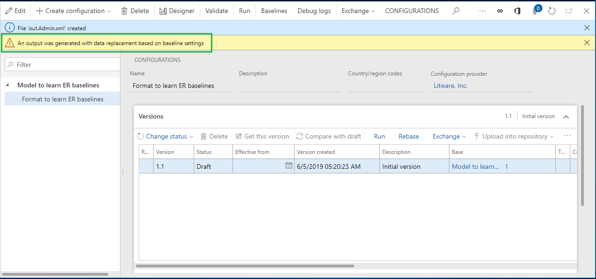
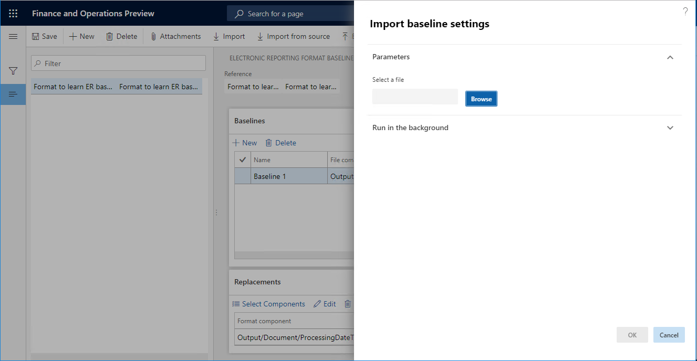
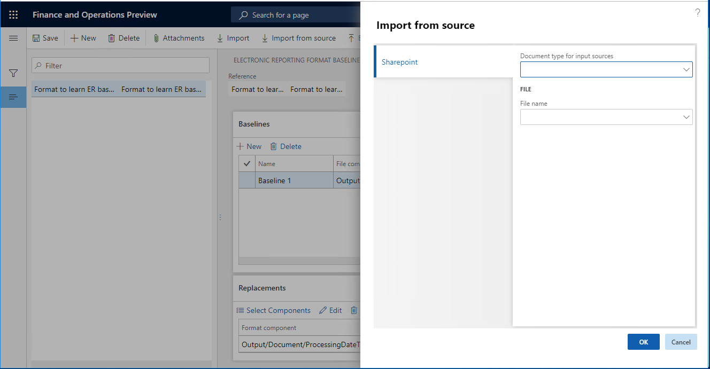

Verbesserungen bei der Nachverfolgung erstellter ER-Berichtsergebnisse und Vergleich mit Ausgangswerten
[!include[banner](../includes/banner.md)]In diesem Thema wird der erste Satz an Verbesserungen beschrieben, die an der Grundlagenfunktion des Frameworks der elektronischen Berichterstattung (ER) erfolgt sind. Diese Verbesserungen sind in Microsoft Dynamics 365 for Finance and Operations Version 10.0.3 (Juni 2019) und später verfügbar.
Automatisieren Sie die Struktur der Grundlagenregeln
Im Thema Von Trace generierte Berichtergebnisse und deren Vergleich mit Grundwerten wird erläutert, wie das ER-Framework konfiguriert werden muss, um Informationen zu ER-Formatausführungen gesammelt und die Ergebnisse dieser Durchläufe bewertet werden. Das Beispiel in diesem Thema zeigt die Schritte an, die abgeschlossen werden müssen.
Beispiele für solche Schritte:
Führen Sie ein ER-Format aus, um eine ausgehende Datei zu generieren, und speichern Sie die Datei lokal.
Fügen Sie die lokal gespeicherten Datei als Anhang dem Grundwert hinzu, der für ein ER-Format hinzugefügt wurde.
Konfigurieren Sie die Grundwertregel für die hinzugefügte Grundregel. Diese Konfiguration umfasst die folgenden Schritte:
- Geben Sie ein ER-Formatelement an, das verwendet wird, um eine ausgehende Datei zu generieren.
- Wählen Sie die Anlage aus, die auf die generierte ausgehende Datei verweist.
Note
Diese Schritte müssen manuell ausgeführt werden, auch wenn sie durch die neuen ER-Funktionen automatisiert werden können. Weitere Informationen über diese Funktion erhalten Sie, wenn Sie das folgende Beispiel abschließen.
Beispiel: Automatisieren Sie die Struktur der Grundlagenregeln
Um die Schritte dieses Beispiels abzuschließen, müssen Sie zunächst die Schritte im Beispiel im Thema Nachverfolgung erstellter Berichtsergebnisse und Vergleich mit Ausgangswerten bis durch den Abschnitt „Fügen Sie eine neue Grundlage für ein entworfenes ER-Format hinzu“ abschließen.
Prüfung des hinzugefügten Grundwerts
Wechseln Sie zu Organisationsverwaltung > Elektronische Berichterstellung > Konfigurationen.
Wählen Sie Grundwerte aus.
Note
Die Schaltfläche Grundwerte im Aktivitätsbereich ist nur verfügbar, wenn der ER-Benutzerparameter Ausführung im Debugmodus für das aktuelle Unternehmen aktiviert ist.
Der Grundwert wurde für das ausgewählte Format Format zum erlernen der ER-Grundwerte hinzugefügt, aber die Grundwertregeln für diesen Grundwert wurden noch nicht hinzugefügt.

Erstellen eines neuen Grundwertregel
Wechseln Sie zu Organisationsverwaltung > Elektronische Berichterstellung > Konfigurationen.
Erweitern Sie in der Struktur Modell zum erlernen der ER-Grundwerte.
Wählen Sie in der Struktur das Format Modell zum erlernen der ER-Grundwerte\Format zum Erlernen des ER-Grundwerts aus.
Wählen Sie im Inforegister Versionen Ausführen aus.
Geben Sie im Feld Eingabe-Id den Wert 1 ein.
Legen Sie die Option Erstellen von Grundwertdateien auf Ja fest.
Wählen Sie OK.
Wählen Sie Ausgangswerte aus.

Die generierte ausgehende Datei wird dem Grundwert des ausgeführten ER-Formats automatisch angefügt. Die Grundwertregel wurde diesem Grundwert automatisch hinzugefügt und enthält auch die Referenz zur zugeordneten Datei.
Geben Sie im Feld Name Grundlage 1 ein.
Geben Sie im Feld Dateinamenmaske .xml ein.
Wählen Sie Speichern.
Das Format ausführen
Sie können nun die verbleibenden Schritte im Beispiel im Thema Nachverfolgung erstellter Berichtsergebnisse und Vergleich mit Ausgangswerten abschließen. Sie können mit „Führen Sie das entworfene ER-Format aus und prüfen Sie das Protokoll, um die Ergebnisse zu analysieren“ beginnen.
Note
Wenn Sie den automatisch auf dem Inforegister Ausgangswerte hinzugefügte Ausgangswert löschen, wird die referenzierte Zuordnung nicht automatisch gelöscht.
Konfigurieren Sie den Ausgangswert, sodass er sich konstant ändernde Teile der ER-Ausgabe ignoriert.
Wenn ein ER-Format konzipiert wurde, um Informationen zu enthalten, die geändert werden, wenn das Format ausgeführt wird, muss das Format obligatorisch die ER-Ausgangswertfunktion verwenden, um die generierten Ergebnisse mit Ausgangswerten zu vergleichen. Bei den Informationen kann es sich beispielsweise um das Verarbeitungsdatum und die entsprechende Uhrzeit oder den eindeutigen Bezeichner eines generierten Dokuments in verschiedenen Formaten (globaler eindeutiger Bezeichner [GUID], usw.) handeln. Mit den neuen ER-Funktionen können Sie die Ausgangswertregel konfigurieren, sodass sie veränderbare Elemente eines ER-Formats ignoriert, wenn das Format ausgeführt wird. Dies dient dem Zweck eines Vergleichs von Ausgangswerten mit den Ergebnissen der Formatausführung. Weitere Informationen über diese Funktion erhalten Sie, wenn Sie das folgende Beispiel abschließen.
Beispiel: Konfigurieren Sie den Ausgangswert, sodass er sich konstant ändernde Teile der ER-Ausgabe ignoriert.
Um die Schritte dieses Beispiels abzuschließen, müssen Sie zunächst die Schritte im Beispiel im Thema Nachverfolgung erstellter Berichtsergebnisse und Vergleich mit Ausgangswerten abschließen.
Ändern eines konfigurierten ER-Formats
Wechseln Sie zu Organisationsverwaltung > Elektronische Berichterstellung > Konfigurationen.
Erweitern Sie in der Struktur Modell zum erlernen der ER-Grundwerte.
Wählen Sie in der Struktur das Format Modell zum erlernen der ER-Grundwerte\Format zum Erlernen des ER-Grundwerts aus.
Wählen Sie Designer aus.
Wählen Sie in der Struktur Ausgabe\Dokument aus.
Wählen Sie Hinzufügen aus.
Im Drop-Down-Dialogfeld in der Struktur, wählen Sie XML \ Attribut aus.
Geben Sie im Feld Name ProcessingDateTime ein.
Wählen Sie OK.
Wählen Sie auf der Registerkarte Zuordnung in der Struktur Ausgabe \Dokument\ProcessingDateTime aus.
Wählen Sie Formel bearbeiten aus.
Geben Sie im Feld Formel den folgenden Ausdruck ein: DATETIMEFORMAT(NOW(), "O")
Wählen Sie Speichern und dann Test aus.
Wählen Sie Test erneut aus, um den konfigurierten Ausdruck zu testen.

Note
Die Registerkarte Testergebnis gibt an, dass der konfigurierte Ausdruck einen unterschiedlichen Datums-und Uhrzeitwert zurückgibt, wenn sie angerufen wird.
Schließen Sie die Seite Formeldesginer und wählen Sie Speichern aus.

Seite Format-Designer schließen.
Entfernen Sie eine vorhandene Ausgangaswertregel
- Wechseln Sie zu Organisationsverwaltung > Elektronische Berichterstellung > Konfigurationen.
- Wählen Sie Ausgangswerte aus.
- In der Liste der Ausgangswerte wählen Sie den Ausgangswert aus, der für das Format Format zum erlernen von ER-Ausgangswerten konfiguriert wird.
- Auf dem Inforegister Ausgangswerte wählen Sie Löschen aus, um die Ausgangswertregel zu entfernen, die Sie zuvor konfiguriert haben.

Definieren Sie Ersatz für Bindungen eines entworfenen ER-Formats
- Wählen Sie auf der Seite Konfigurationen auf dem Inforegister Ersatz die Option Komponenten auswählen aus.
- In der Formatkomponentenstruktur erweitern Sie den Knoten Ausgabe, erweitern Sie Ausgabe \Dokument und aktivieren Sie anschließend das Kontrollkästchen für Ausgabe \Dokument\ProcessingDateTime.
- Wählen Sie OK.

Die ausgewählte ER-Formatkomponente wurde der Liste der Komponenten auf dem Inforegister Ersetzungen hinzugefügt. Wenn das Basis-ER-Format in Debugmodus ausgeführt wird, wird die Bindung des Formats für jede Komponente durch die Bindung ersetzt, die in der Spalte Binden angezeigt wird. Um die Standardbindung für eine Komponente zu ändern, die im Inforegister Ersetzungen angezeigt wird, wählen Sie Bearbeiten aus.
Erstellen eines neuen Grundwertregel
Führen Sie die Schritte im Abschnitt „Beispiel: Automatisieren Sie die Struktur der Grundlagenregeln“ oben in diesem Thema aus. Eine Benachrichtigung warnt Sie, dass die ausgehende Datei mit Ausgangswerteinstellungen erstellt wurde, und dass eine erzwungene Ersetzung der Formatbindungen aufgetreten ist.

Warnungen zur Ersetzung von Formatbindungen unterdrücken
Durch das Festlegen bestimmter ER-Parameter können Sie Benachrichtigungen unterdrücken, die vor der Ersetzung von Formatbindungen warnen. Diese Unterdrückung kann hilfreich sein, wenn Formatbindungen in einem unbeaufsichtigten Modus ersetzt werden, indem Regression Suite Automation Tool verwndet wird. In diesem Fall kann die Warnung als ein Fehler des Testfalls, der ausgeführt wird, betrachtet werden.
- Wählen Sie auf der Seite Konfigurationen im Aktivitätsbereich auf der Registerkarte Konfigurationen die Option Benutzerparameter aus.
- Legen Sie die Option Ausgangswertwarnungen unterdrücken auf Ja fest, und wählen Sie dann OK aus.
Überprüfen Sie die erstellte Ausgangswertdatei
Wechseln Sie zu Organisationsverwaltung > Elektronische Berichterstellung > Konfigurationen.
Wählen Sie Ausgangswerte aus.
Wählen Sie Anhänge aus.
Note
Die generierte Datei beinhaltet das Verarbeitungsdatum und den Zeittext ("#") von der Bindung, die in der hinzugefügten Ausgangswertregel konfiguriert wurde, nicht aus der Bindung des Formats.
Schließen Sie die Seite Anhänge.
Führen Sie das entworfene ER-Format aus und prüfen Sie das Protokoll, um die Ergebnisse zu analysieren
- Wechseln Sie zu Organisationsverwaltung > Elektronische Berichterstellung > Konfigurationen.
- Erweitern Sie in der Struktur Modell zum erlernen der ER-Grundwerte.
- Wählen Sie in der Struktur das Format Modell zum erlernen der ER-Grundwerte\Format zum Erlernen des ER-Grundwerts aus.
- Wählen Sie im Inforegister Versionen Ausführen aus.
- Geben Sie im Feld Eingabe-Id den Wert 1 ein.
- Wählen Sie OK.
- Wechseln Sie zu Organisationsverwaltung > Elektronische Berichterstellung > Konfigurations-Debug-Protokolle.
Das Ausführungsprotokoll enthält Informationen über die Ergebnisse des Vergleichs der generierten Datei mit der konfigurierten Grundlage. Das Protokoll gibt an, dass die generierte Datei und der Ausgangswert gleich sind, auch wenn das ausgeführte Format die Bindung enthält, mit der ein sich ständig ändernder Datums-und Uhrzeitwert in der ausgehenden Datei eingeben wird.
Note
Obgleich die ausgehende Datei mit Ausgangswerteinstellungen erstellt wurde, die die Ersetzung der Bindungen des Formats erzwingen, erhalten Sie keine Warnungen zur Ersetzung.
Ausgangswerteinstellungen zwischen Umgebungen austauschen
Ausgangswerteinstellungen exportieren
Mit den neuen ER-Funktionen können Sie Ausgangswerteinstellungen für das ausgewählte ER-Format aus der aktuellen Umgebung exportieren und als XML-Dateien speichern.
Um Ausgangswerteinstellungen zu exportieren,wählen Sie auf der Seite Formatausgangswerte für elektronische Berichterstellung Exportieren aus.
Grundwerte-Einstellungen importieren
Exportierte Ausgangswerteinstellungen können in eine andere Umgebung importiert werden. Die Umgebung muss zuerst als ER-Format importiert werden. Sie können anschließend die Ausgangswerteinstellungen importieren.
Um Ausgangswerteinstellungen aus einer lokal gespeicherten XML-Datei zu importieren, wählen Sie auf der Seite Formatausgangswerte für elektronische Berichterstellung Importieren und anschließend Durchsuchen aus, um die XML-Datei auszuwählen.

Um Ausgangswerteinstellungen aus einer XML-Datei zu importieren, die auf dem Microsoft SharePoint-Server gespeichert ist, wählen Sie basierend auf den aktuellen Einstellungen der Dokumentverwaltung und dem ausgewählten Dokumenttyp, auf Basis der aktuellen Dokumentverwaltungseinstellungen gespeichert wird und den ausgewählten Dokumenttyp auf der Seite Formatausgangswerte für elektronische Berichterstellung Importieren aus Quelle aus. Wählen Sie dann den Dokumenttyp und die XML-Datei aus. Der erforderliche Dokumenttyp, um auf den SharePoint-Ordner zuzugreifen, muss zuvor bereits konfiguriert werden.

Note
Sie können die Aufgabenaufzeichnung verwenden, um die Schritte zum Auswählen des erforderlichen Dokumenttyps und des Dateinamens im Dialogfeld Importieren aus Quelle zu erfassen. Auf diese Weise können Sie erforderliche Ausgangswerteinstellungen auf dem SharePoint-Server behalten und anschließend automatisch importieren, indem Sie eine Aufgabenaufzeichnung wiedergeben, wenn Sie automatisierte Tests ausführen, indem Sie Regression Suite Automation Tool verwenden.